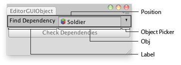

EditorGUI.ObjectField
Obsolete public static Object ObjectField(Rect position,
GUIContent label,
Object obj,
Type objType);
public static Object ObjectField(Rect position,
string label,
Object obj,
Type objType,
bool allowSceneObjects);
public static Object ObjectField(Rect position,
GUIContent label,
Object obj,
Type objType,
bool allowSceneObjects);
Parameters
| position | Rectangle on the screen to use for the field. | |
| label | Optional label in front of the field. | |
| obj | The object the field shows. | |
| objType | The type of the objects that can be assigned. | |
| allowSceneObjects | Allow assigning Scene objects. See Description for more info. |
Returns
Object The object that has been set by the user.
Description 描述
Makes an object field. You can assign objects either by drag and drop objects or by selecting an object using the Object Picker.
Ensure that the allowSceneObjects parameter is false if the object reference is stored as part of an asset, since assets can't store references to objects in a Scene.
If the ObjectField is part of a custom Editor for a script component, use EditorUtility.IsPersistent() to check if the component is on an asset or a Scene object.
See example in Editor class.

Object field in an Editor Window.
using UnityEditor; using UnityEngine; using System.Collections;
//Select the dependencies of the found GameObject public class EditorGUIObjectField : EditorWindow { public GameObject obj = null; [MenuItem("Examples/Select Dependencies")] static void Init() { UnityEditor.EditorWindow window = GetWindow(typeof(EditorGUIObjectField)); window.position = new Rect(0, 0, 250, 80); window.Show(); }
void OnInspectorUpdate() { Repaint(); }
void OnGUI() { obj = (GameObject)EditorGUI.ObjectField(new Rect(3, 3, position.width - 6, 20), "Find Dependency", obj, typeof(GameObject)); if (obj) if (GUI.Button(new Rect(3, 25, position.width - 6, 20), "Check Dependencies")) Selection.objects = EditorUtility.CollectDependencies(new GameObject[] {obj});
else EditorGUI.LabelField(new Rect(3, 25, position.width - 6, 20), "Missing:", "Select an object first"); } }
public static void ObjectField(Rect position,
SerializedProperty property,
Type objType,
GUIContent label);
Parameters
| position | Rectangle on the screen to use for the field. | |
| property | The object reference property the field shows. | |
| objType | The type of the objects that can be assigned. | |
| label | Optional label to display in front of the field. Pass GUIContent.none to hide the label. |
Description 描述
Makes an object field. You can assign objects either by drag and drop objects or by selecting an object using the Object Picker.